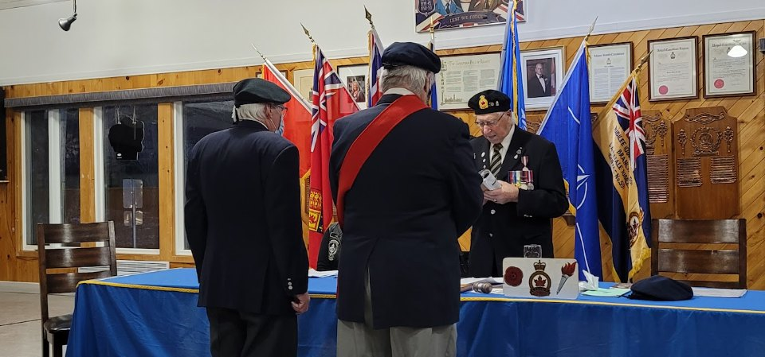

Légion royale canadienne, filiale 59, Gaspé
Bienvenue
Fondée en 1948, il y a
75 ans
Au service de la communauté de la MRC de la Côte-de-Gaspé
La Légion royale canadienne, filiale 59 de Gaspé, est une organisation à but non lucratif qui existe pour soutenir et engager les citoyens de notre région, y compris les jeunes, les adultes, les familles, les aînés et les anciens combattants, afin d'améliorer leur niveau de vie et leur qualité de vie.
Nous servons également d'innombrables organismes à but non lucratif et groupes d'intérêt particulier dans notre région, en leur fournissant des services, des programmes et des ressources pour faciliter la réalisation de leur mission et de leurs objectifs.
À propos
La Légion royale canadienne, filiale 59 de Gaspé, incarne l'esprit de solidarité et de service dans notre communauté.
En tant qu'organisation enracinée dans nos traditions et notre histoire, nous offrons un lieu de rassemblement où les gens peuvent se retrouver, s'amuser et tisser des liens durables.
Nos activités et événements sont conçus pour promouvoir l'inclusion, le respect et le soutien mutuel parmi nos membres et les résidents de Gaspé. De plus, notre engagement envers nos anciens combattants se manifeste par diverses initiatives qui honorent leur dévouement et leur bravoure.
En travaillant ensemble, nous renforçons le tissu social de notre communauté et contribuons à sa prospérité continue.

Adhésion
Être membre de la Légion représente des avantages énormes.
Les avantages sont les suivants :
- Réductions sur les produits de consommation au bar
- Participation à des événements spéciaux
- Accès à des régimes d'assurance collective
- Et bien plus encore
Programmes
La Légion royale canadienne offre plusieurs programmes concrets pour soutenir les anciens combattants et leurs familles, y compris des programmes de mentorat, d'éducation et de soutien financier. De plus, elle contribue activement à la préservation de l'histoire militaire du Canada et à la promotion de valeurs telles que le service, la camaraderie et la solidarité.
Programme de soutien aux anciens combattants
Le programme de soutien aux anciens combattants vise à aider les anciens combattants face à leurs difficultés, qu'elles soient physiques ou psychologiques, en les orientant vers les bonnes ressources ou simplement en les écoutant.
Programme du Fonds du coquelicot
Les Fonds du coquelicot sont un soutien financier pour les anciens combattants. Ils servent principalement à nourrir et à loger les anciens combattants qui n’ont pas beaucoup d’argent.
Programme de soutien aux descendants d'anciens combattants
Ce programme vise à encourager les enfants et petits-enfants d'un ancien combattant à poursuivre leurs études en leur offrant une bourse par année.
Programme de soutien aux organismes communautaires
Le programme de soutien aux organismes communautaires a aidé la communauté, par exemple en faisant des dons ou même simplement en leur offrant un endroit gratuit pour organiser des événements.
Programme d'engagement des aînés
Le programme aide les personnes âgées à faire tout ce qui est essentiel pour vivre dans un environnement sain, comme faire le ménage. Le programme sert également à accorder des droits aux soins à domicile ou simplement aux soins hospitaliers.
Services
La Légion canadienne de Gaspé offre une gamme de services essentiels à la communauté locale et à ses membres. Ces services comprennent un soutien aux anciens combattants et à leurs familles, notamment une aide financière, des conseils et des références vers des ressources appropriées. La Légion organise également des événements et des cérémonies commémoratives pour honorer les anciens combattants et promouvoir le souvenir de leurs sacrifices. De plus, elle joue un rôle actif dans la vie sociale de la région en organisant des activités et des initiatives visant à renforcer les liens communautaires et à promouvoir le patriotisme et l'engagement civique. La Légion canadienne de Gaspé est un pilier important de la vie locale, apportant un soutien précieux aux anciens combattants tout en contribuant au bien-être et à la cohésion de la communauté.
Location de salle
La Légion de Gaspé loue ses espaces pour des événements comme des réunions, des fêtes et des mariages. Elle offre des commodités pratiques et soutient sa mission d'aider les anciens combattants.
Musée de la guerre
La Légion de Gaspé possède un musée de la guerre présentant l'histoire militaire locale et honorant la bravoure des anciens combattants. Les visiteurs découvrent des objets historiques et des histoires de héros de guerre, approfondissant leur compréhension de l'impact des conflits et préservant la mémoire collective.
Bingo mensuel
La Légion de Gaspé organise un bingo mensuel amusant pour la communauté, rassemblant les gens pour jouer et soutenir des causes importantes. C'est une ambiance conviviale avec des prix, contribuant aux initiatives de la Légion pour les anciens combattants.
Fléchettes
La Légion canadienne de Gaspé organise régulièrement des jeux de fléchettes, offrant ainsi à ses membres et à la communauté locale une activité amusante et compétitive. Les participants mettent en valeur leurs compétences, apprécient la camaraderie et ont la chance de rencontrer de nouvelles personnes tout en créant des liens autour de leur amour du jeu. C'est une excellente occasion de se détendre, de socialiser et de passer un bon moment dans une atmosphère chaleureuse.
Billard
La Légion de Gaspé dispose de plusieurs tables de billard pour les membres et les gens de la région, offrant des divertissements diversifiés. C'est un lieu prisé pour le perfectionnement, les jeux amicaux et les tournois, parfait pour socialiser et se détendre avec des équipements de qualité et une atmosphère accueillante.
Services de soutien aux anciens combattants et aux cadets
La Légion de Gaspé aide les anciens combattants, les membres en service des Forces armées canadiennes et de la GRC, ainsi que leurs familles, à obtenir le soutien auquel ils ont droit. La filiale les met en lien avec les agents d'entraide de la Légion pour les prestations d'invalidité et les demandes auprès d'Anciens Combattants Canada, et avec l'aide d'urgence du Fonds du coquelicot. Elle appuie aussi les cadets de la région, en favorisant le leadership, le civisme et la relève du souvenir.
Comité exécutif

Alfred Matte
PrésidentKimberly Fournier
Première vice-présidenteArchie Adams
Deuxième vice-présidentJean Terrence
Troisième vice-présidentAlfred Cassidy
Sergent d'armesAdam Normand
TrésorierSylvie Nicolas
SecrétaireGouvernance
Canada
Publications, guides et manuels
- La loi constituante
- Les statuts généraux
- Règles de procédure
- Manuel de leadership de filiale
- Guide de développement immobilier
Politiques nationales
Formulaire
Québec
- Gestion des membres
- Règlements et gestion des filiales
- Courriels pour les filiales
- Marketing et relations publiques
- Services aux vétérans (agent d'entraide)
- Coquelicot et souvenir
- Rituel, récompenses et protocole
- Sports pour les membres
- Perfectionnement en leadership
- Congrès national
- Département de l'approvisionnement
- Programmes pour les membres
Nous joindre
- Courriel
- info@legiongaspe.ca
- Téléphone
- 418-368-2772
- Adresse
- 197, rue Jacques-Cartier
Gaspé (Québec)
G4X 1N3